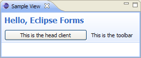

Introduction
Eclipse Forms is a layer on top of SWT that allows you to achieve a web-like feel inside your desktop applications without having to resort to an embedded browser. Due to its sophisticated functionality and relatively small footprint, its popularity has been constantly growing since its inception.
As the clients of forms has grown in numbers, so too has the complexity of their implementations. Developers are using forms to represent more complex resources and perform more in depth tasks than ever before. This requires a much higher level of interaction and more control over the layout and functionality of forms. One area that was lacking in previous versions was the variety of ways a developer could customize and make use of the form heading.
For this reason, the majority of the new features provided in 3.3 are related to forms headings. Clients of forms now have many more options at their disposal regarding what they can do with their headings. In addition, there have been some improvements to sections and some useful new APIs have been added.
Setup
Throughout this article code examples will be given to be added to an Eclipse view. To prepare for the remainder of the article, you can setup a plug-in project as follows:
- Open Eclipse 3.3 or later in a fresh workspace and close the welcome
- Select File > New > Project... > Plug-in Project
- Give the project a name and click Next twice
- Select Plug-in with a view and click Finish
- In the plug-in manifest editor, add a dependency to
org.eclipse.ui.forms - Open the class defining the view and overwrite its code as follows:
public class SampleView extends ViewPart {
private FormToolkit toolkit;
private Form form;
/**
* The constructor.
*/
public SampleView() {
}
/**
* This is a callback that will allow us to create the viewer and
* initialize it.
*/
public void createPartControl(Composite parent) {
toolkit = new FormToolkit(parent.getDisplay());
form = toolkit.createForm(parent);
form.setText("Hello, Eclipse Forms");
}
/**
* Passing the focus request to the form.
*/
public void setFocus() {
form.setFocus();
}
/**
* Disposes the toolkit
*/
public void dispose() {
toolkit.dispose();
super.dispose();
}
}
To test your view perform the following steps:
- Switch to the overview page of the plug-in manifest editor for your project
- Click the Launch an Eclipse application link
- When the new instance of Eclipse appears, select Window > Show View > Other... > Sample Category > Sample View
The view should look something like this:

Figure 1:
A basic form in a view
Form Heading Improvements
As mentioned above, form headings have become much more powerful in 3.3. This portion of the article outlines all the new features and options that are available.
Title Rendering
By default, forms headings are rendered with the same background colour as the form, as seen in Figure 1. This does not make them stand out as a distinct area of the form and is also generally not very attractive. Previous to 3.3, two mutually exclusive alternatives were available to customize the background. Clients could either specify a background image to be tiled across the entire heading or an array of colours to generate a gradient background. The difficulty with this approach is that designers need to take into account the different platforms and system settings that may be present in a user's environment. The design must be appealing under all configurations. Since Eclipse supports so many different platforms, this was no easy task.
In 3.3, forms provides a simple mechanism to delegate painting a gradient on the heading to the FormToolkit. The toolkit provides a colour combination designed to work well under all supported configurations. Clients can access the colours directly through the following constants:
- H_GRADIENT_START
- H_GRADIENT_END
- H_BOTTOM_KEYLINE1
- H_BOTTOM_KEYLINE2
Although the colours are available as constants, you can have forms paint your heading with this configuration by modifying your form code as follows:
public void createPartControl(Composite parent) {
toolkit = new FormToolkit(parent.getDisplay());
form = toolkit.createForm(parent);
form.setText("Hello, Eclipse Forms");
toolkit.decorateFormHeading(form); // NEW LINE
}
Using the code above, the form will appear as follows:

Figure 2: A basic form with a decorated heading
Toolbar Layout Changes
As developers started using forms to achieve more and more complex goals, the variety of content placed in the head
client grew exponentially. Previous to 3.3 the head client on the FormHeading was added to the same row as the title.
This approach severely limited the space that developers had to work with and limited the usefulness of the feature.
In 3.3 the head client has been moved to the second row of
the heading. The toolbar, by default will remain on the first row with the title, although the option is available to move it
to the second row using the following line of code: form.setToolBarVerticalAlignment(SWT.BOTTOM);
To see the effects for yourself you can add a simple head client and toolbar by modifying your code as follows:
public void createPartControl(Composite parent) {
toolkit = new FormToolkit(parent.getDisplay());
form = toolkit.createForm(parent);
form.setText("Hello, Eclipse Forms");
toolkit.decorateFormHeading(form);
form.setHeadClient(toolkit.createButton(form.getHead(), "This is the head client", SWT.PUSH)); // NEW LINE
form.getToolBarManager().add(new Action("This is the toolbar") { }); // NEW LINE
form.getToolBarManager().update(true); // NEW LINE
form.setToolBarVerticalAlignment(SWT.BOTTOM); // NEW LINE
}
With this code the form will appear as follows:

Figure 3: A form with a head client and the toolbar aligned to the bottom
If the last line from the sample above is commented out, then the default alignment will be used for the toolbar and the form will render like this:
Figure 4: A form with a head client and default toolbar alignment
Message Handling
One very important aspect of rich user interface design is ensuring that when a user makes a mistake, they are notified immediately and assisted in correcting it. In large, complex forms it may be difficult to determine what is wrong without obvious visual cues.
For this reason, in 3.3 the error message handling framework has been improved. Messages of types defined in
org.eclipse.jface.dialogs.IMessageProvider will now be represented with text between the title and the toolbar
on the form heading (or in place of the toolbar if it is not used). In addition to displaying a textual representation of the message,
an appropriate image will be displayed in the header in place of the form's image until the message is resolved.
By default, the message will be displayed as static text, but an IHyperlinkListener can be added to the form to
turn the message into a hyperlink that will inform the listener of any clicks.
Here is a code sample demonstrating how to add a message to your form and register a hyperlink listener:
toolkit.decorateFormHeading(form);
form.setHeadClient(toolkit.createButton(form.getHead(), "This is the head client", SWT.PUSH));
form.getToolBarManager().add(new Action("This is the toolbar") { });
form.getToolBarManager().update(true);
form.addMessageHyperlinkListener(new HyperlinkAdapter()); // NEW LINE
form.setMessage("This is an error message", IMessageProvider.ERROR); // NEW LINE
With these changes, the form will appear as follows:
Figure 5: A form with an error message and a message hyperlink listener
Drop-Down Menus
With the development of more complicated forms comes a wider variety of interactions that may be required. To help developers make useful functions quickly accessible, a new menu manager is now available. It can be retrieved and used to populate a menu which will be rendered next to the form's title when it is not empty.
Below is a code snippet demonstrating how to add a menu to your form heading (note that the changes from the message handling section have been removed):
toolkit.decorateFormHeading(form);
form.setHeadClient(toolkit.createButton(form.getHead(), "This is the head client", SWT.PUSH));
form.getToolBarManager().add(new Action("This is the toolbar") { });
form.getToolBarManager().update(true);
form.getMenuManager().add(new Action("This is the menu") { }); // NEW LINE
When the menu button is clicked, the menu will appear at the cursor as shown below:
Figure 6: A form with a menu
The menu can also be accessed by right-clicking on the title or title image.
Drag and Drop Support
In some cases, forms represent objects that have meaning to other workbench components. For instance, you could have a form based editor that allows you to edit the contents of a proprietary file type that will be referenced elsewhere. In 3.3, API has been created to add drag and drop support to your forms. This support allows you to drag your forms so they can be dropped into other areas. With this feature you would be able to, for instance, drag your form into other files to quickly and easily create references to the associated object. This saves the user from having to remember a URL or browse back to the item from a different editor.
Due to the complex nature of SWT's drag and drop functionality, a programmatic example will not be given here. The methods that can
be used to add the support to your form are Form.addTitleDragSupport(int operations, Transfer[] transferTypes, DragSourceListener listener)
and Form.addTitleDropSupport(int operations, Transfer[] transferTypes, DropTargetListener listener). For more information
on using these methods, see the
Form class javadoc or the
Adding Drag and Drop to an SWT Application article from
Eclipse Corner.
Once drag support has been properly added to the form, the title will change colours as the cursor nears and enters the draggable area. This effect is shown below.
Figure 7: A draggable form with the cursor near the title
Figure 8: A draggable form with the cursor over the title
Section Improvements
Sections have become the fundamental building blocks of most forms created today. A common approach to form design is to have several columns of adjacent sections. However, when sections are given text clients that are taller than their title text, the title area grows accordingly to accommodate the client. Unfortunately, this means that adjacent sections with similar content will not line up properly and may look sloppy.
In 3.3, new API has been added to ExpandableComposite to allow designers to account for this limitation. There is a method,
ExpandableComposite.getTextClientHeightDifference() that will return the number of pixels the title area was increased
by to accommodate the text client. This can be used to set the ExpandableComposite.descriptionVerticalSpacing field (default is 0)
or the ExpandableComposite.clientVerticalSpacing field (default is 3). These fields specify the padding to place above the
description and the client area respectively. Note that if there is no description, then the descriptionVerticalSpacing
field will have no affect.
Here is a code snippet from the org.eclipse.ui.forms.examples.internal.rcp.SecondPage class from the
org.eclipse.ui.forms.examples plug-in that demonstrates usage of this feature:
Section s1 = createTableSection(form, toolkit, "First Table Section", true); Section s2 = createTableSection(form, toolkit, "Second Table Section", false); s2.descriptionVerticalSpacing = s1.getTextClientHeightDifference();
Below is a pair of images to demonstrate the different this makes. These screenshots were both created using the Form Examples plug-in:
Figure 9: A pair of sections aligned using getTextClientHeightDifference()
Figure 10: A pair of sections without custom alignment
Shared-Header Form Editor
The org.eclipse.ui.forms.editor.FormEditor class provides a starting point for creating multi-page editors with form pages.
One common use case of this class is to use form pages that all have the same titles, head clients and toolbar items. To achieve this
prior to 3.3, implementers had to have all of their child pages create the headers in the same way. This not only meant
that there was a lot of overhead and code duplication involved in achieving a consistent look, but also that the editor was using
system resources excessively to create copies of all the same controls.
In 3.3 the org.eclipse.ui.forms.editor.SharedHeaderFormEditor class has been added to allow the header area to be shared
among all the pages. In order to implement this properly, subclasses must override the createHeaderContents(IManagedForm headerForm)
class to populate the header. In addition, any header controls that require life cycle management should be wrapped with the
IFormPart interface. Also, child pages of the SharedHeaderFormEditor should not have their own header or else
two headers will be displayed.
Message Manager
As discussed above, support has been added to show messages in the form heading. To make the handling of multiple messages within
a form easier, a message manager has been made available in 3.3 through the IManagedForm interface. The manager is provided
as an interface (IMessageManager).
The message manager will track multiple messages for the user at a time and will show text-based on the most severe message present
at any given time (ERROR > WARNING > INFO). It also provides the ability, when adding a
message, to associate a control with it. If this is done, the message manager will decorate the specified control with an image appropriate
to the message type.
If the message label in the form heading is configured to be a hyperlink (as discussed earlier in this article), the href
attribute of the HyperlinkEvent will be an array of IMessage objects. This array is used internally by the message
manager to create a tooltip for the hyperlink. It is also available for clients to do whatever they like with the information once the
link is clicked.
The advantages of this API are, first, that it inherently allows many messages to be retained on a form at once and, second, that it hides the details of how control decoration is performed.
A good example implementation of this API is in the org.eclipse.ui.forms.examples.internal.rcp.ErrorMessagesPage
class from the org.eclipse.ui.forms.examples plug-in. Below are two screenshots of the implementation:
Figure 11: An example implementation of the message manager showing its tooltip

Figure 12: An example of what can be done with a HyperlinkListener using the message manager
Conclusion
This article has outlined the new features added to Eclipse Forms in version 3.3. Its goal was to pick up where the previous forms article left off and to help clients of the plug-in make better use of the tools at their disposal to increase the quality of the Rich UIs. Feedback can be sent to platform-ua-dev@eclipse.org.